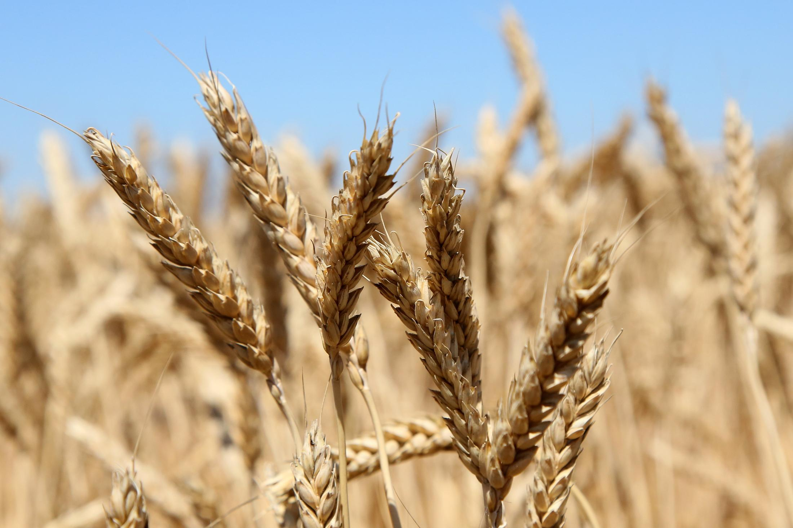
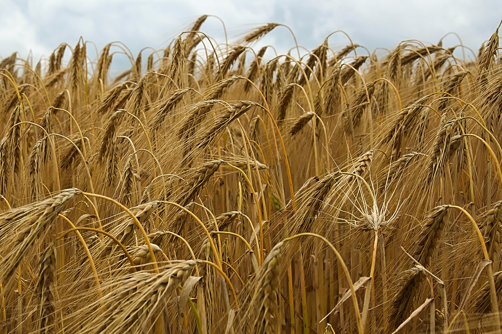
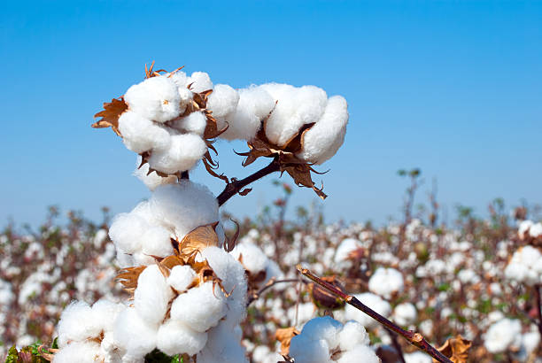
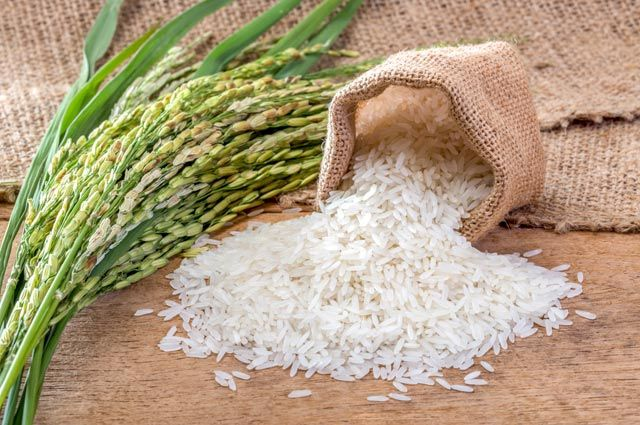

Қосылу
ОНЛАЙН ЧАТҚАСайт сипаттамасы
«Қазақстандағы дәнді дақылдар» веб-сайты маңызды интернет-ресурс болып табылады, дәнді дақылдарды зерттеуге, өсіруге және ауыл шаруашылығында пайдалануға арналған Қазақстан. Біз ауыл шаруашылығы өндірушілері үшін сенімді ақпарат көзі болуға ұмтыламыз, агрономдар, студенттер және барлығы ауыл шаруашылығының осы маңызды саласына қызығушылық танытқан мүдделі тараптар. Сайт Қазақ ұлттық аграрлық зерттеу университетінің қолдауымен әзірленді!
Қазақ ұлттық аграрлық университеті – жоғары білім Алматы қаласында құрылған. Зерттеу университетінің негізгі мақсаты – интеграция ғылым мен өндіріске қатысу арқылы жоғары білікті кадрларды даярлау іргелі және қолданбалы ғылыми зерттеулер мен ғылыми-техникалық жобалар. Оқыту келесі факультеттерде жүргізіледі: агробиология және фитосанитария; технология және биоресурстар; ветеринария; орман шаруашылығы, жер ресурстары және бау-бақша; гидротехника, мелиорация және кәсіпкерлік; инженерия.
Сайт мақсаттары
-
Білім және халыққа хабарлау
Сенімді және жаңартылған ақпарат көзімен қамтамасыз ету дәнді дақылдар, олардың қасиеттері туралы, ауыл шаруашылығының әртүрлі салаларында өсіру және пайдалану ерекшеліктері.
-
Ауыл шаруашылығын қолдау өндірушілер
Нұсқауларды, кеңестерді және ресурстарды қамтамасыз ету Қазақстанда дәнді дақылдарды өсірудің тиімділігін арттыру.
-
Өнеркәсіптің дамуына ықпал ету
Озық технологиялар мен тәжірибелерді таратуға жәрдемдесу сапасы мен өнімділігін арттыру үшін дәнді дақылдарды өсіру және пайдалану.
-
Салауатты өмір салтын насихаттау
Азық-түлік өнімдерінің маңызды көзі ретінде дәнді дақылдарды танымал ету дұрыс тамақтануға және халықтың әл-ауқатына ықпал ететін қоректік заттар.
Мақсатты аудитория
Мақсатты топ, мақсатты аудитория – маркетингте қолданылатын термин немесе ортақ белгілері бойынша біріктірілген адамдар тобын белгілеу үшін жарнама, немесе белгілі бір мақсат немесе мақсат үшін біріктірілген. Жалпы белгілерді ұйымдастырушылар талап ететін кез келген сипаттама деп түсінуге болады.
Біздің сайт мыналарға арналған:
- Ауыл шаруашылығы тауарын өндірушілер дәнді дақылдарды өсірумен айналысады немесе осы салаға қызығушылық танытады.
- Агрономдар мен ауыл шаруашылығы мамандары кім заманауи технологиялар мен өсіру әдістері туралы ақпаратты іздеу.
- Дәнді дақылдар мен ауыл шаруашылығы ғылымдарын оқитын студенттер мен ғалымдар.
Салауатты өмір салтына қызығушылық танытатын және білгісі келетін кез келген адам дәнді дақылдардың тамақтану және азықтандырудағы пайдасы туралы толығырақ.
Мұнда сіз Қазақстандағы дәнді дақылдар туралы бейнероликті көре аласыз
Сондай-ақ өсімдіктер туралы басқа бейнелерді көруге болады
Қызықты фактілер
Мұнда астық туралы қызықты деректер бар. Мысалы, сіз мыңдаған сорттар бар екенін білесіз бе? бидай, және олардың классификациясы айтарлықтай күрделі, бірақ тек екі негізгі түрі бар - қатты және жұмсақ.
-

Бидай – адамдар қолдан өсіре бастаған алғашқы дақыл. Бидай өсірумен алғаш рет Қытай мен Месопотамия тұрғындары айналысқан.
-

Арпа ең жылдам пісетін дәнді дақыл болып саналады, өйткені оның вегетациялық кезеңі небәрі 62 күн.
-

Мақта сұйықтықты жақсы сіңіреді. Мақта мата сұйықтықтарды салмағынан 27 есеге дейін сіңіре алады, бұл мақта киімді әсіресе ыңғайлы етеді, өйткені ол терді сіңіреді.
-

Күріште жүрек-қан тамырлары жүйесіне пайдалы көп калий бар. Сондай-ақ кальций, йод, темір, мырыш, фосфор. Күріш құрамында аллергиялық реакция тудыратын ақуыз – глютен жоқ.